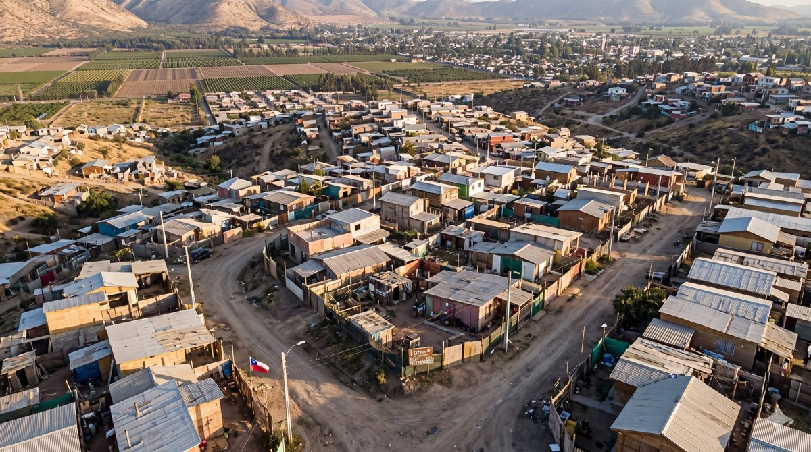
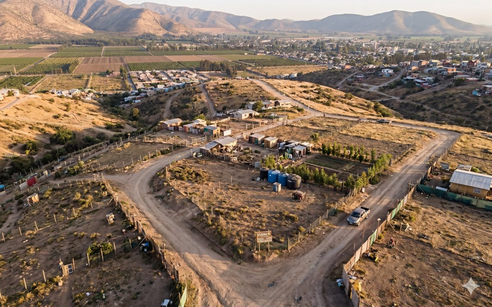

He trabajado como arquitecta en Puerto Williams, Purranque, Melipilla, Santiago, Pucón, Temuco y Antofagasta — territorios muy distintos entre sí, pero con un problema que se repite en todos ellos: personas que compraron un terreno de buena fe, con ahorros de años, y que al momento de construir se encontraron con una trampa legal que nadie les había advertido. Esta entrada nace de esa experiencia acumulada en el territorio.

Crecimiento informal en zona rural. Las construcciones sin planificación ni servicios básicos generan problemas que se acumulan por décadas.
Las cesiones de derechos: el negocio más peligroso del mundo rural
Cuando alguien te vende una "cesión de derechos" sobre un paño de terreno, no te está vendiendo una propiedad. Te está cediendo su parte en un bien que pertenece a varios herederos o copropietarios, muchos de los cuales ni siquiera saben que esa venta ocurrió. No hay escritura inscrita en el Conservador de Bienes Raíces. No hay título saneado. No hay nada que te proteja si mañana aparece otro heredero a reclamar.
He visto familias que llevaban diez años viviendo en un terreno así, que habían construido su casa con todo el esfuerzo del mundo, y que no podían regularizar porque el predio nunca estuvo realmente a su nombre.
Consejo: Si alguien te ofrece una cesión de derechos, aléjate. No importa cuán barato sea. No importa cuánto confíes en quien vende.
Los "retazos de terreno": cuando la informalidad se vuelve un laberinto
Los retazos son subdivisiones informales de predios rurales, vendidos sin plano de subdivisión aprobado por el municipio ni por el SAG. Muchos no cumplen con la superficie mínima exigida por la normativa. Al no existir como unidad legal independiente, no tienen rol SII propio y es imposible obtener permisos de edificación.
La persona compró, construyó, vivió años ahí, y cuando quiso regularizar descubrió que su terreno no existe legalmente. Es una situación muy difícil de resolver y muy costosa de sanear.

Subdivisiones informales sin servicios básicos, sin acceso formal y sin respaldo legal. Una trampa silenciosa para quienes buscan su primer terreno.
Agua potable, electricidad y fosas: las factibilidades que nadie verifica
Antes de comprar cualquier terreno rural, hay tres preguntas que deben tener respuesta por escrito:
1. ¿Tiene factibilidad de agua potable?
En zona rural esto no es automático. Puede depender de un APR (Agua Potable Rural), de un pozo propio con derechos de aprovechamiento ante la DGA, o de una fuente superficial. Sin agua acreditada, no hay permiso de edificación.
2. ¿Tiene factibilidad de electricidad?
La extensión de redes eléctricas en sectores rurales puede ser extremadamente costosa si el predio está lejos de la red existente. He visto casos donde el costo de conexión superaba el valor del terreno.
3. ¿Cómo se resolverá el saneamiento?
La fosa séptica debe ubicarse a distancia mínima de la napa freática y de cualquier fuente de agua. En sectores como el valle del Maipo y sus afluentes, las napas son superficiales y muy sensibles. Una fosa mal instalada no solo contamina el agua propia: contamina la de los vecinos. He visto comunidades enteras con sus napas comprometidas por décadas de instalaciones informales. El daño es silencioso y muy difícil de revertir.
Construir es legal, pero hay reglas que cumplir
Aquí viene el segundo gran malentendido: mucha gente cree que porque el terreno es suyo, puede construir lo que quiera. No es así.
Toda construcción en Chile requiere un Permiso de Edificación otorgado por la Dirección de Obras Municipales (DOM) correspondiente. Esto implica cumplir con la Ley General de Urbanismo y Construcciones, el Plan Regulador, y las normas técnicas de habitabilidad, estructura y aislación térmica.
Construir sin permiso genera problemas muy concretos: no puede vender con facilidad, no puede hipotecar, no puede acceder a subsidios habitacionales, y en casos extremos la DOM puede ordenar la demolición. Regularizar es posible en muchos casos, pero siempre es más fácil y más barato hacerlo bien desde el principio.
Un llamado a la conciencia sobre el crecimiento rural
El territorio rural no es infinito. Cada subdivisión informal, cada fosa mal instalada, cada construcción sin planificación, tiene consecuencias que van más allá del predio individual. Afectan los suelos agrícolas, las napas, los cauces y la calidad de vida de comunidades que llevan generaciones en esos territorios.
Crecer en zonas rurales es legítimo y necesario. Pero hacerlo bien requiere informarse, asesorarse, y asumir que habitar el territorio es también una responsabilidad colectiva.
¿Tienes dudas sobre tu terreno o proyecto?
Puedo orientarte antes de que tomes una decisión equivocada. Trabajo de forma remota en todo Chile.
lsalazarsalina@gmail.com · +56 9 7952 5044